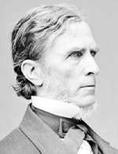

|

|

|
|
|
William Pitt Fessenden was born at Boscawen, New Hampshire, the illegitimate son
of the lawyer and later militia general Samuel Fessenden and of Ruth Greene.
Taken home to Fryeburg, Maine, by his father shortly after his birth, Fessenden
was raised there by his paternal family. He was educated at Bowdoin and in 1827
was admitted to the bar at Portland. In 1835, after brief periods in Bridgton
and Bangor, he settled permanently in Portland, where he became a successful
attorney. He served in the legislature as a National Republican and Whig in 1832
and 1840; accompanied his godfather, Daniel Webster, on a western trip; and in
1840 was elected to Congress, where he opposed the Gag Rule and other proslavery
measures. Returning to Portland in 1843, he was again a member of the
legislature in 1845-1846 and 1853-1854, when he was elected to the U.S. Senate.
A pronounced opponent of the Kansas-Nebraska Act, he soon joined the new
Republican party, which got him reelected him to his seat in 1859.
During the Civil War, Fessenden rendered important service as chairman of the
Senate Committee on Finance. In 1864, after the resignation of Secretary Salmon
P. Chase, Abraham Lincoln appointed him Secretary of the Treasury, an office in
which he continued many of Chase's policies. He resigned early in 1865 to
reenter the Senate, the Maine legislature having reelected him to his seat.
Always a moderate, after the war Fessenden was one of the leaders of the more
conservative faction of his party. Although he sought to prevent a split between
Congress and President Andrew Johnson, he accepted the chairmanship of the Joint
Committee of Fifteen on Reconstruction, favored the Freedmen's Bureau Bill and
Civil Rights Act, and believed the Fourteenth Amendment was an adequate
settlement of Reconstruction. As a result, he was lukewarm toward the
Reconstruction Acts, opposed the Tenure of Office Act, and deplored the
impeachment of Johnson. During the impeachment trial, he resisted popular
pressure to vote for the President's acquittal, an action for which he was
roundly denounced. Nevertheless, he campaigned loyally for General U. S. Grant
and continued to be active in the Republican party. He died in Portland in 1869.
Source: Hans Trefousse, Historical Dictionary of Reconstruction
(Westport, CT: Greenwood Press, 1991), 75-76.
|